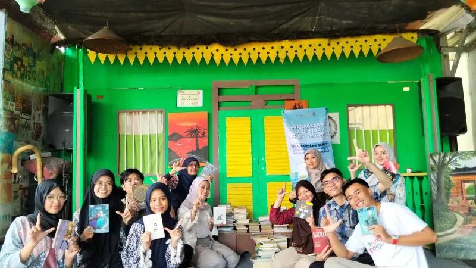
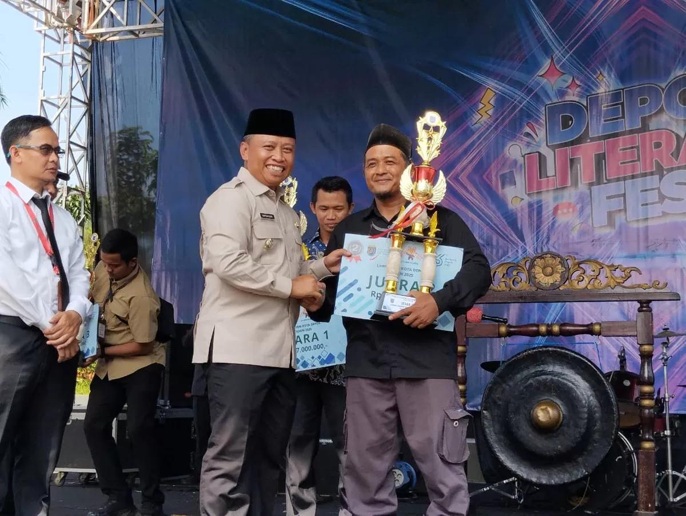
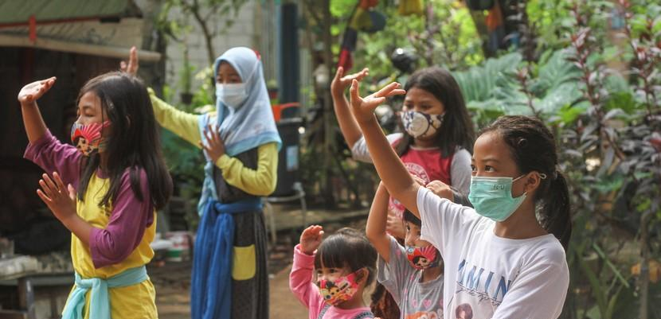
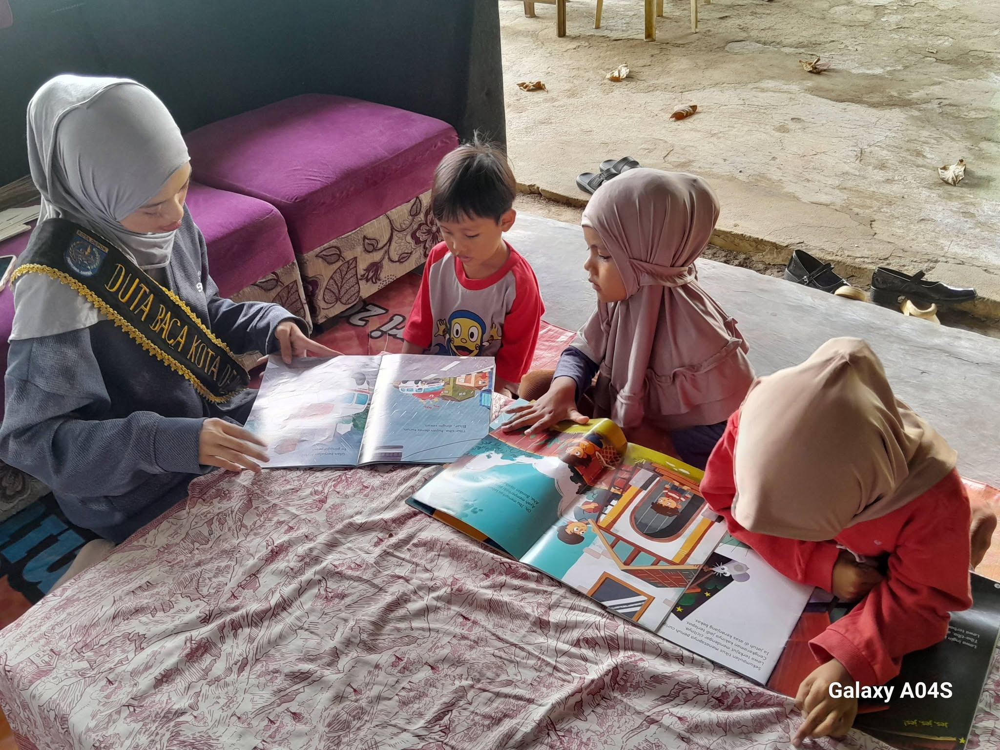
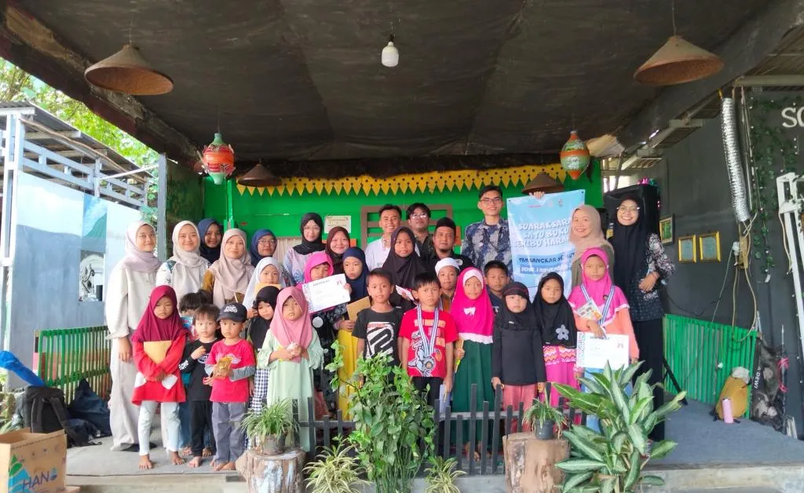
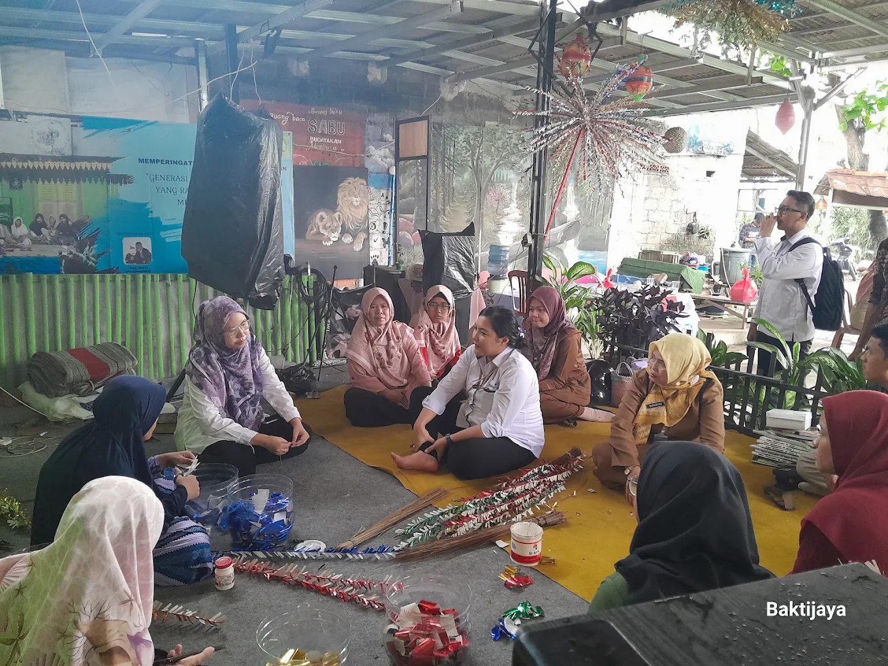
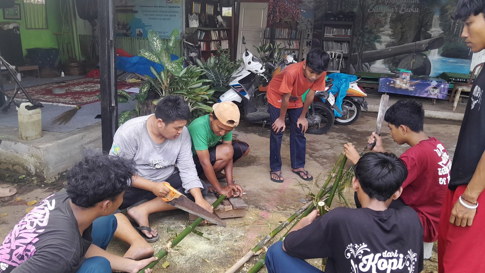
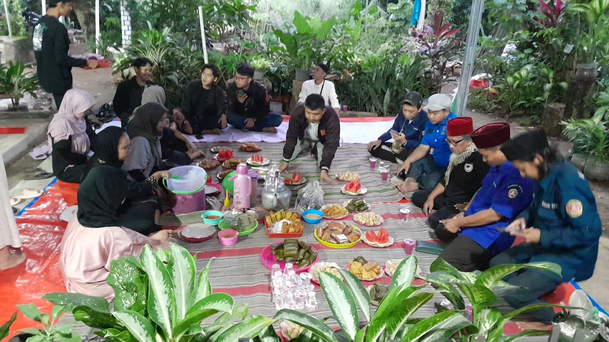

Seni & Budaya
Kegiatan seni dan budaya seperti mural, tari, kerajinan, serta berbagai aktivitas kreatif.
Kegiatan Sangkar Semut
Berbagai kegiatan Sangkar Semut menjadi ruang bagi anak-anak dan generasi muda untuk belajar, berkarya, serta terlibat dalam aktivitas positif di lingkungan mereka.
Bidang Kegiatan
Sangkar Semut menjalankan berbagai kegiatan yang menjadi ruang belajar, berkarya, dan berinteraksi bagi anak-anak serta generasi muda.
Kegiatan seni dan budaya seperti mural, tari, kerajinan, serta berbagai aktivitas kreatif.
Kegiatan membaca, menulis, bercerita, dan aktivitas literasi melalui Sangkar Buku.
Kegiatan bersama yang mendorong kepedulian, kebersamaan, dan keterlibatan di lingkungan sekitar.
Aktivitas yang memberikan ruang untuk belajar dan mengembangkan berbagai keterampilan kreatif.
Kegiatan keagamaan sebagai bagian dari aktivitas positif yang berlangsung di lingkungan komunitas.
Kegiatan yang mengenalkan kepedulian lingkungan, pemanfaatan kembali material, dan aktivitas 3R.

Sangkar Buku
Sangkar Buku merupakan bagian dari kegiatan literasi Sangkar Semut yang menjadi ruang bagi anak-anak untuk membaca, bercerita, menulis, dan mengikuti berbagai aktivitas literasi.
Kehadiran Sangkar Buku juga menjadi bagian dari upaya Sangkar Semut dalam menghadirkan kegiatan belajar yang dekat dengan lingkungan masyarakat.
Dokumentasi & Prestasi
Berbagai kegiatan dan pencapaian menjadi bagian dari perjalanan Sangkar Semut dalam menghadirkan ruang berkarya dan belajar bagi masyarakat sekitar.

2025
TBM Sangkar Semut meraih Juara 2 dalam Depok Literacy Fest 2025 sebagai salah satu pencapaian dalam kegiatan literasi yang dijalankan.
Galeri
Beberapa dokumentasi kegiatan dan kebersamaan yang berlangsung di Sangkar Semut.





